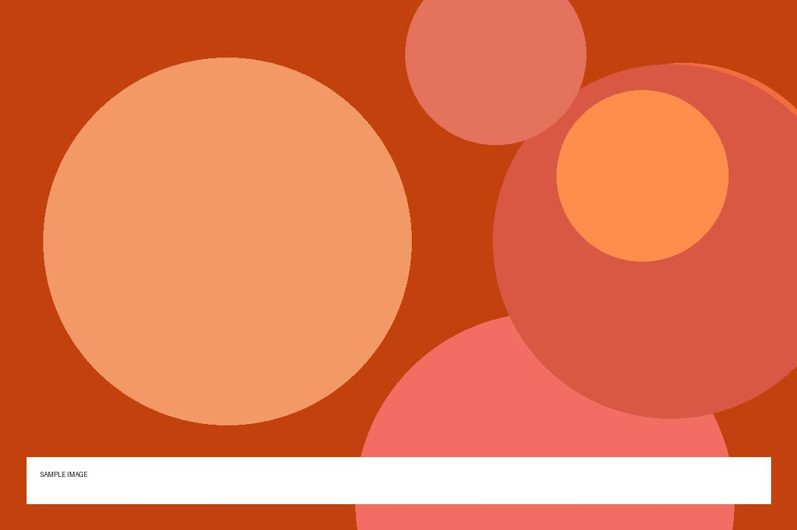
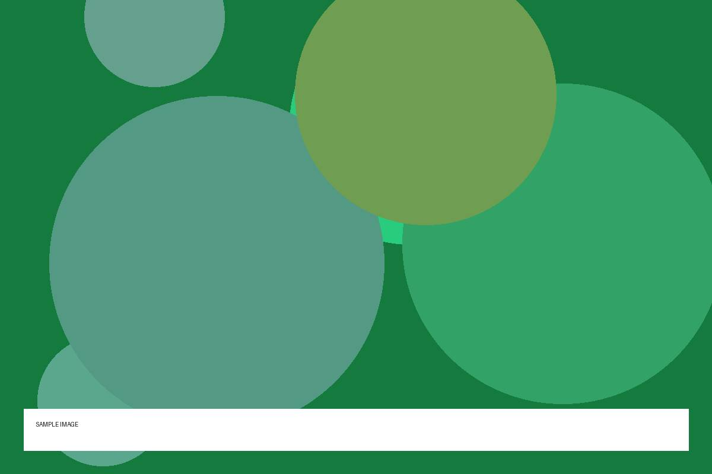
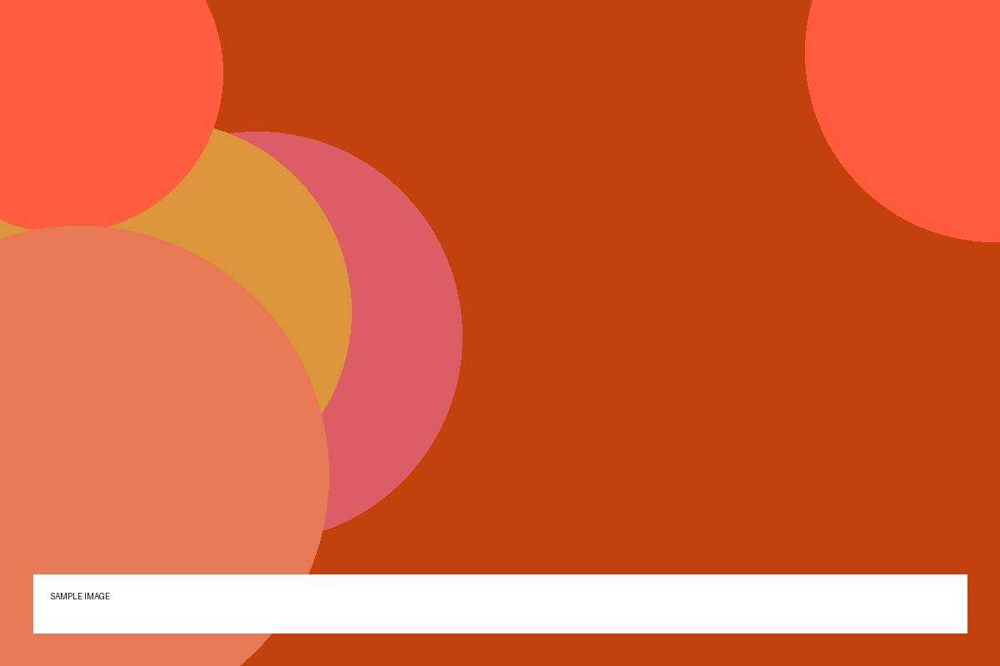
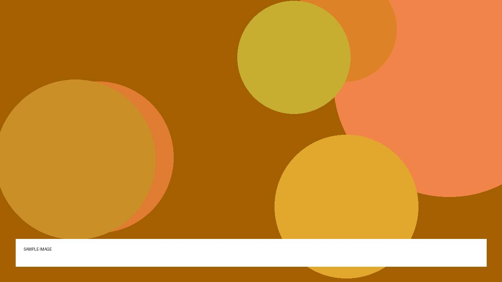
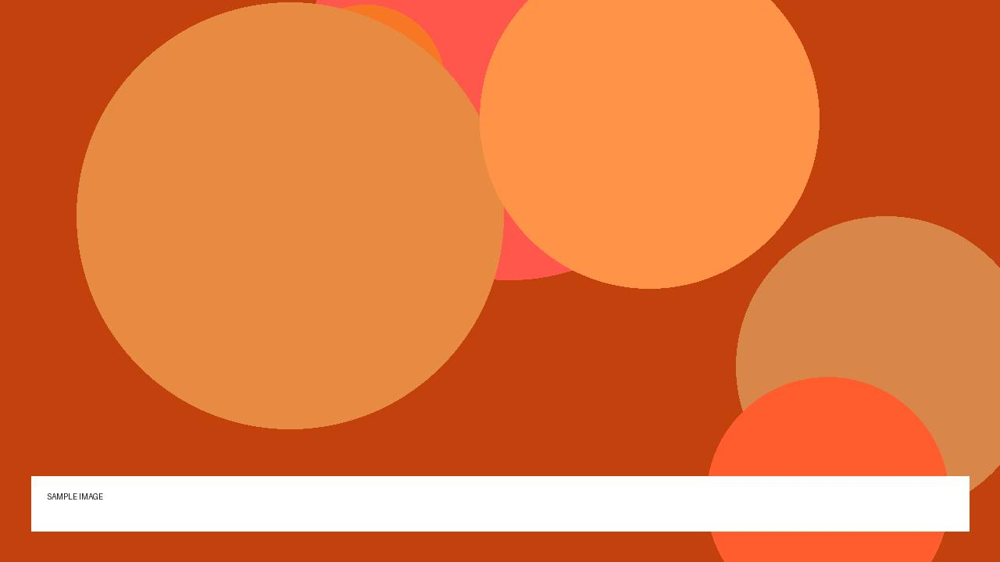
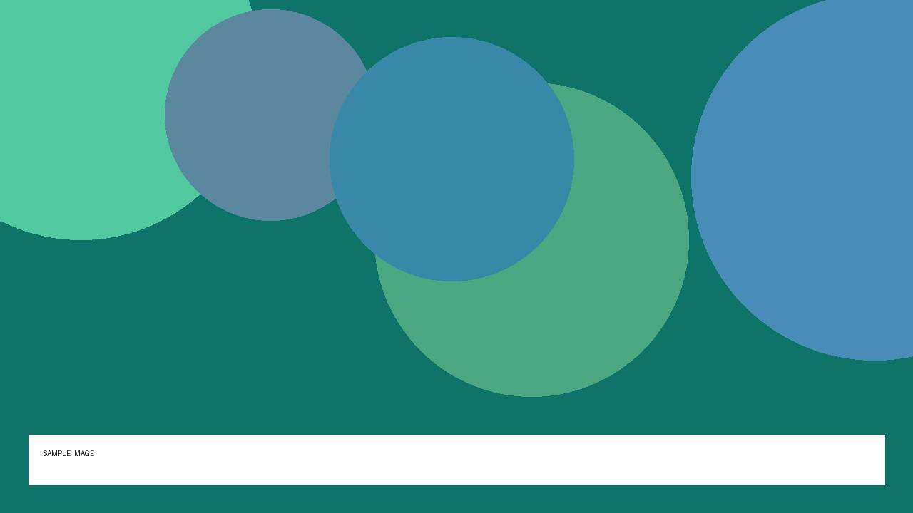

Top story
Agents that book travel are quietly getting good
This is fictional sample text for the sharectl-edition example. It shows how a short summary looks under a headline.
CVChris ValeThe Gradient Post
Weather
High 71° and low 56° today. Wind up to 9 mph. Slight chance of rain, 20%.
Open-Meteo
Markets (sample)
2 of 3 closed higher.
Yahoo Finance

Top story
This is fictional sample text for the sharectl-edition example. It shows how a short summary looks under a headline.
Models, agents and the people building them.

This is fictional sample text for the sharectl-edition example. It shows how a short summary looks under a headline.
Voices from X
This is fictional sample text for the sharectl-edition example. It shows how a short summary looks under a headline.
This is fictional sample text for the sharectl-edition example. It shows how a short summary looks under a headline.

This is fictional sample text for the sharectl-edition example. It shows how a short summary looks under a headline.
New from the channels you follow.



Your agent read – items from 9 sources this morning and kept 20. The rules are yours: at most 3 per source, with any topic filters you have configured.
In today's edition
Left out today
That was everything worth seeing today.